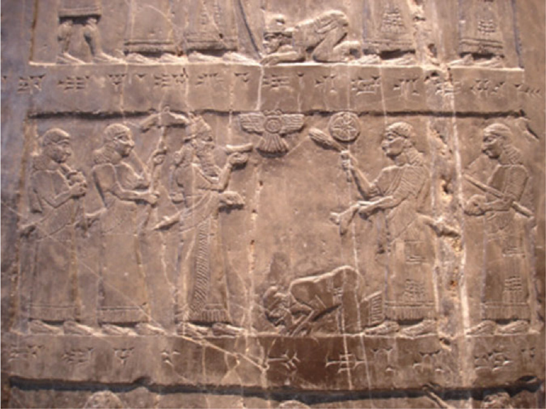

<template>
<div data-hf-id="hf-ms60" id="s34" data-composition-id="s34" data-width="1920" data-height="1080" data-duration="5.159583333" style="position:relative;width:100%;height:100%">
<section data-hf-id="hf-c6th" class="shot-surface collage theme-light">
<div data-hf-id="hf-xtcz" class="ground-texture" aria-hidden="true" data-layout-ignore=""></div>
<header data-hf-id="hf-g11z" class="frame-header"><span data-hf-id="hf-hjzl"><i data-hf-id="hf-rv09" class="header-dot"></i>une histoire du pouvoir</span><span data-hf-id="hf-7ly1" class="header-right">08 / 09</span></header>
<div data-hf-id="hf-igu7" class="kicker">chapitre 08</div><div data-hf-id="hf-bdx3" class="copy"><div data-hf-id="hf-5i4w" class="heading-rule" aria-hidden="true"></div><h2 data-hf-id="hf-t43f" class="headline"><span data-hf-id="hf-hcq4" class="title-line">le pouvoir survit</span></h2></div><div data-hf-id="hf-4aao" class="photo-frame"><span data-hf-id="hf-7qec" class="image-index" aria-hidden="true" data-layout-ignore="">01</span></div><div data-hf-id="hf-28w6" class="photo-frame secondary"><span data-hf-id="hf-6jh9" class="image-index" aria-hidden="true" data-layout-ignore="">02</span></div><div data-hf-id="hf-2sd5" class="photo-caption">stèle d’hammurabi · xviiie siècle av. n. è. · domaine public / obélisque noir · vers 825 av. n. è. · domaine public</div>
<footer data-hf-id="hf-1dc7" class="frame-footer"><span data-hf-id="hf-ajp8">qui a inventé les rois ?</span><span data-hf-id="hf-0i4a" class="footer-page">34 / 44</span></footer>
</section>
</div>
<script>window.DocRuntime.mount("s34",{"duration": 5.1595833330000005, "figure": null, "camera": "push", "list": false, "cta": false});</script>
</template>